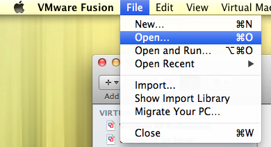
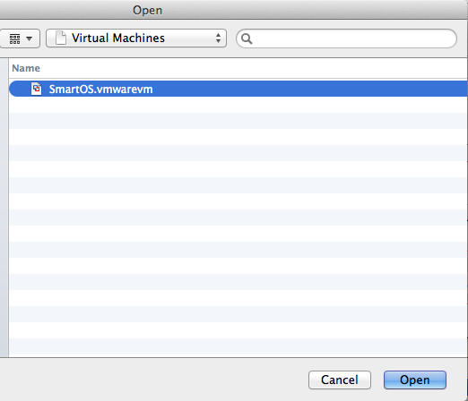

VMware Fusion
To get started with SmartOS on VMware Fusion, download the latest VMware image.
Once downloaded, extract it. Mac OS X example:
tar -jxvf Downloads/smartos-latest.vmwarevm.tar.bz2 -C ~/Documents/Virtual\ Machines.localized/
| Warning The SmartOS.vmwarevm image is a ready-to-run VM. *Do not* try to "import" or create a "new" VM from the image. |
The VM is ready to go, simply go to the "File" menu and select "Open".

The navigate to the directory where you extract the image and the "SmartOS.vmwarevm". Click on it and click "Open".

The VM should immediately pop up in a new window, allowing you to start it. Click the "Play" then "I copied it".

It will boot. You should be greeted by GRUB.
| Warning If the image hangs on a black screen when booting you may need to run the following command to fix display settings: echo 'mks.enableGLBasicRenderer = "FALSE"' >> ~/Documents/Virtual\ Machines.localized/SmartOS.vmwarevm/SmartOS.vmx |

Allow the default boot target to boot ("Live 64-bit (text)"). In this case "text" refers to the standard keyboard and monitor console, you would select one of the ttya options if you required console redirection to COM1 (ttya), which in a VMware environment you do not.

On first boot, the "SmartOS Setup" program will run. Follow its prompts to do the initial setup of your machine.
| Warning Do not use the first disk presented for the storage pool (c0t0d0). This is the boot media and overwriting it will make the machine not boot anymore. |
Virtualization Hardware Extensions
If you are using VMware Fusion 5 or newer on a system with Intel VT-x extensions such as a newer MacBook Pro, you can enable pass through to allow nested virtualization capabilities allowing you to use KVM within SmartOS on top of VMware. To enable this, go to your VM's settings while its powered down and change the compatibility to "Fusion 5 or higher".
Virtual Machine > Settings > Compatibility

Then go to Virtual Machine > Settings > "Processors & Memory" and expand the "Advanced Options" to select "Enable hypervisor applications in this virtual machine":

{kind=link}
{kind=link}
{kind=link}
{kind=link}
{kind=link}